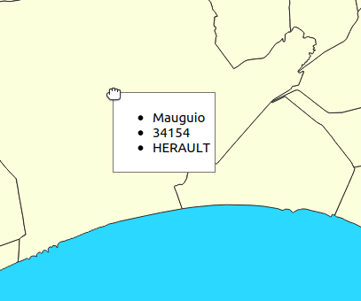

Les expressions sont omniprésentes dans QGIS. Il est important de les maîtriser un minimum si vous voulez pleinement exploiter QGIS.
Nommage d'une entité
Dans les propriétés de la couche vecteur, onglet Infobulle, il est bon de paramétrer comme QGIS doit composer
le nom d'une entité.
Par exemple, sur une couche commune, on peut mettre le nom du champ :
- à l'aide du menu déroulant, on peut choisir le nom d'un champ,
NOM_COM. - en cliquant sur l'epsilon violet, on arrive dans la fenêtre des expressions de QGIS :
- Effacer le contenu à gauche
- Dans le panneau du milieu, aller dans
Champs et Valeurset double-cliquer sur le nom du champNOM_COM. - Remarquer l'ajout dans le panneau à gauche de l'expression suivante
"NOM_COM". - Cliquer sur OK
- Cette expression est équivalente à la première, mais elle est plus correct syntaxiquement.
Il faut retenir que le nom des champs sont entre guillemet double "".
- retournons dans la fenêtre des expressions. Nous souhaitons dorénavant afficher le nom de la commune, la chaîne de
caractère
:et le code INSEE de la commune.- Effacer le contenu à gauche
- Dans le panneau du milieu, aller dans
Champs et Valeurset double-cliquer sur le nom du champNOM_COM. - Contrairement aux noms des champs qui sont entre guillement double
"", les chaînes de caractères sont entre guillement simple'' - Pour concaténer, on peut utiliser
||,+ou la fonctionconcat() - Une solution possible
concat("NOM_COM", ' : ', "INSEE_COM")
Les infobulles
Similaire à la section précédente, on peut définir l'infobulle. On utilise cette fois-ci du HTML pour la mise en forme.
- Pour activer les infobulles sur la carte, menu
Vue▶Afficher les infobulles. - Puis retourner dans les propriétés de la couche vecteur, onglet
Infobulle.
Rappel succinct sur du HTML pour faire une liste à puce:
html
<h3>Titre</h3>
<p>Paragraphe</p>
<ul>
<li>Une</li>
<li>liste</li>
<li>à</li>
<li>puce</li>
</ul>
- Les balises
<h1></h1>,<h2></h2>,<hX></hX>représentent des titres, en commençant par le plus important. En anglais header. <p></p>est un paragraphe<ul></ul>est une liste à puce non ordonnée. En anglais unordered list.<ol></ol>est une liste ordonnée. En anglais ordered list.<li></li>est un élément dans une liste. En anglais list item.
Il est possible de personnaliser l'afffichage de l'infobulle à l'aide de CSS.
Exemple d'une infobulle QGIS :
html
<ul>
<li>[% "NOM_COM" %]</li>
<li>[% "INSEE_COM" %]</li>
<li>[% "NOM_DEP" %]</li>
</ul>
[% ... %] permet à QGIS de reconnaître qu'il s'agit d'une expression qu'il faut évaluer au sein d'un autre bloc de texte.

Requêtage sur une couche vecteur
- La couche commune comportent de nombreuses entités. On peut le voir graphiquement sur le canevas de la carte, mais aussi en ouvrant sa table attributaire.

- Pensez-bien à sélectionner votre couche dans la légende. Cela active ou non les actions dans la barre d'outils ci-dessus.
- À l'aide de l'outil
Identifier les entitésdans la barre d'outils, faire un clic sur une entité.- Un nouveau panneau s'ouvre présentant les résultats.
- Depuis cette barre d'outils, ouvrir la
table attributaire.- Comme dans un tableur, les données textes sont à gauche, les données numériques sont à droite.
- Faire le tour de cette nouvelles boîte de dialogue.
- Pour info, le jaune dans les icônes représentent très souvent la notion de sélection dans QGIS.
- Utilisons l'outil de sélection à l'aide de la souris et affichons les entités sélectionnées dans la table.
-
Utilisons l'icône avec un carré jaune et un epsilon (le
ε) afin de construire une expression de sélection.- Cette icône se trouve dans la barre d'outils ci-dessus de la fenêtre principale
- ou dans la nouvelle fenêtre de la table attributaire.
-
On souhaite pouvoir sélectionner le(s) entité(s) qui répondent au critère
"CODE_INSEE" = '70550', pour cela utiliser l'interface graphique afin de construire la requête. Que remarquons-nous sur la structure de l'expression ?- Les nom des champs sont entre
"" - Les chaînes de caractères dans les cellules sont entre
''.
- Les nom des champs sont entre
- On souhaite désormais toutes les communes dont :
- le code INSEE commence par
70à l'aide de l'opérateurlike:- Le pourcentage permet de faire un caractère "joker" remplacant n'importe quelle chaîne de caractères
- Solution :
"CODE_INSEE" like '70%'
- Solution :
- la population est inférieur à 1000 habitants :
- Les populations sont au format texte et non nombre entier :
to_int- Solution :
to_int( "POPUL" ) < 1000
- Solution :
- Le pourcentage permet de faire un caractère "joker" remplacant n'importe quelle chaîne de caractères
- les communes du
70et du25 - les trois communes
- le code INSEE commence par
Enregistrer le résultat d'une sélection en tant que nouvelle couche
- On peut enregistrer la sélection de la commune dans une nouvelle couche de données en faisant un clic-droit sur la couche puis
Exporter. - Choisir un format pour l'export, par exemple
ESRI Shapefile. On peut aussi choisir de faire une reprojection des données.
Attention, dans la fenêtre pour exporter les entités, toujours utiliser les trois petits points lors de la saisie du nom de fichier !

La table attributaire : mise en forme conditionnelle
Pour retrouver plus facilement des objets dans une grande table attributaire, on peut utiliser la fonctionnalité de QGIS de mise en forme conditionnelle des champs ou des lignes de la table.
Le principe est de fournir une ou plusieurs règles, via une expression QGIS, et d'y associer un style de champ ou de ligne. Par exemple @value LIKE 'A%'

Calculatrice de champ
La calculatrice de champ est un outil accessible avec le boulier dans la fenêtre de la table attributaire.
Il permet la mise à jour d'un champ existant ou alors de créer un nouveau champ.
Pour toutes modifications d'une couche vecteur, on doit se placer dans une session d'édition, à l'aide du petit stylo dans la barre d'outils Numérisation ou dans la fenêtre de la table attributaire.
Panneau statistique
Dans la barre d'outils Attributs, il existe un outil de statistiques sur un champ.
Il fonctionne à l'aide d'une couche vecteur en entrée ainsi que d'un champ de cette couche ou une expression.